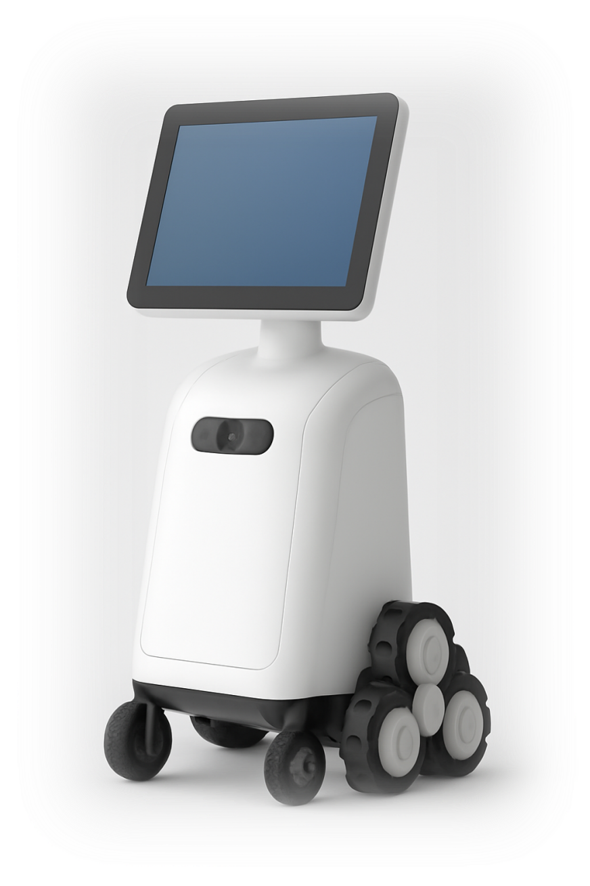

An intelligent exercise companion robot for seniors

Millions of seniors face a dangerous paradox: they need physical activity to stay healthy, but fear of falling keeps them sedentary—accelerating their decline.
Over 14 million Americans aged 65+ experience a fall each year—that's roughly 1 in 4 seniors.
In 2021 alone, approximately 3 million seniors required emergency care for fall-related injuries.
The U.S. healthcare system spent approximately $80 billion treating non-fatal falls in 2020.
Real-time risk monitoring and posture analysis to prevent injuries before they happen.
Ergonomic compartment for groceries, medicine, or personal items during outdoor walks.
Families can track exercise status, heart rate, and location through a secure mobile app.
Intelligent AI pathfinding ensures the robot navigates safely around curbs and pedestrians.
Uses depth camera to scan environment and posture, providing real‑time 3D data for risk assessment.
Processes sensor data with on‑board AI to identify risks and generate precise movement commands.
Executes smooth, responsive movement through high‑torque motors and dynamic balance control.
Instantly alerts caregivers via 5G in emergencies and provides regular activity updates through a secure mobile app.
US Market
Home Healthcare market projection by 2033. The North America Fall Detection market alone hits $285M by 2030.
China Market
The "Silver Economy" in China is projected to reach massive scale, opening a ¥7T immediate entry opportunity.
Move Safely. Live Freely.
Aether is a student innovation team building human-centered technology that helps older adults stay active with confidence. We combine engineering rigor with real empathy.
Our logo fuses two ideas: Orbit lines represent constant support—like a protective 'field' around seniors. The gear core represents engineering, reliability, and real-world buildability.
Together, it reflects Aether's promise: freedom powered by safety.
Aether Blue
#43B4F0
Jet Black
#070707
Deep Navy
#1C3649
Pure White
#FFFFFF
Soft Gray
#E6E6E8
"Safety should never reduce independence."
"Support that stays in the background."
"Move Safely. Live Freely."
We start from real conversations with families
We prototype, test, and iterate quickly
Protection without surveillance or stigma
Reliability matters when health is involved
Siyuan Bin
CEO
Xun Feng
CFO
Enze Ma
CMO
Guoren Liu
CSO
Yanlang Liu
CTO